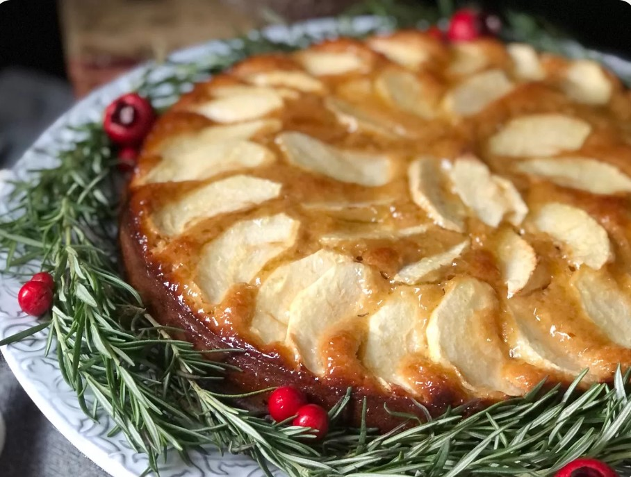

<!DOCTYPE html>
<html lang="en">
<head>
  <meta charset="UTF-8">
  <link rel="stylesheet" href="styles.css">
  <meta name="viewport" content="width=device-width, initial-scale=1.0">
  <meta http-equiv="X-UA-Compatible" content="ie=edge">
  <title>Social Network</title>
</head>
<body>
  <!-- <header>APP</header> -->
  <div id="root"></div>
  <!--  -->
  <!-- <main class="mainLabel"> -->
    <!-- <div class="principalMain"> -->
      <!-- <div class="SignLogButtons">
        <button class="SignUp btnSelected" id="SignInButtonOption">Sign Up</button>
        <button class="LogIn" id="LogInButtonOption">Log In</button>
      </div> -->
      <!-- <div class="mainSignUp showMain" id="mainSignUp">
        <input type="text" placeholder="Your e-mail address" class="e-mail"  id="email">
        <input type="text" placeholder="Username" class="username" id="username">
        <input type="text" placeholder="Password" class="password" id="password">
        <button class="createAccount" id="CreateAccount">Create Account</button>
      </div>
      <div class="mainLogIn hideMain" id="mainLogIn">
        <input type="text" placeholder="E-mail or Username" class="user" id="EmailLogin">
        <input type="text" placeholder="Password" id="PasswordLogin">
        <button class="LogInBtn" id="LogInAccount">Log In</button>
        <div class="forgotUsernameOption">
        <a href="#">I forgot my username or password</a>
        </div>
      </div> -->
    <!-- </div> -->
  <!-- </main> -->
  
  <!-- <div class="postMain">
    <div class="menu">
    
      <input type="search" id="searchProfile">
      <button id="searchIconBtn"></button>
      <button id="profile">  </button>
    
  </div>
  <div class="wallPost">
    
    <h2 class="usernamePost">@Pueba1</h2>
    <h3 class="recipeName">Apple cake</h3>
    <p class="recipeText">
      Ingredientes:<br>

🍏 3 Manzanas verdes
🍏 100 gr de esparcible @canola.life
🍏 200 gr de harina
🍏 150 gr de azúcar morena
🍏 6 gr de levadura instantánea
🍏 1 Cucharadita de canela en polvo
🍏 200 gr de leche
🍏 3 Huevos
🍏 1/3 de taza de mermelada de durazno o Piña

<br>
Preparación:<br>

Lo primero será pelar las manzanas y cortar la mitad en cascos delgados y la otra mitad en cubitos de 1 centímetro aproximadamente y reservar.

En un Bowl grande vamos a integrar todos los ingredientes secos, la harina, el azúcar, la levadura y la canela…mezclamos bien con una cuchara o tenedor.

Agregamos el esparcible @canola.life derretido y la leche para comenzar a batir hasta obtener una mezcla homogénea…en ese punto agregamos los huevos y seguimos batiendo, cuando todo esté integrado vamos incorporar las manzanas que cortamos en cubos ayudándonos de una espátula, luego disponemos la mezcla en un molde para horno cubierto con papel encerado y acomodamos las manzanas en cascos en la parte superior sin hacer presión para que no se sumerjan.

Es momento de llevar al horno a 180 °C por 50 minutos o hasta que un palillo salga limpio… retiramos del horno dejamos que repose por 10 minutos para desmoldar y con una brocha vamos a cubrir con una capa delgada de la mermelada para darle un acabado brillante y divinooo a nuestro cake.

Pueden decorarlo con romero y arándanos o cerezas para que les quede hermoso en su mesa navideña.
    </p>
    <button class="like">Like</button><button class="comment">comment</button>

  </div> 
</div> -->

  <footer>Social Network Proyect, by: Jimena Villalobos, Jennifer Fuñez and Rossanna Ariza</footer>
  <script type="module" src="main.js"></script>
</body>
</html>